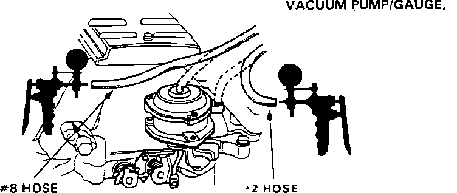
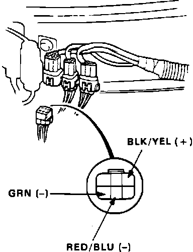
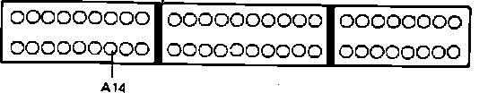
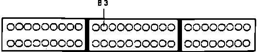

Component Tests and General Diagnostics
Bypass Control Diagnosis:

1. Start engine and allow to idle.
2. Remove #2 vacuum hose from bypass control diaphragm and connect vacuum gauge to hose.
Vacuum, proceed to step 13.
No vacuum, proceed to next step.
3. Remove hose #12 from vacuum tank mounted below vacuum control box in rear of engine compartment.
4. Check for vacuum on hose #12.
Vacuum, proceed to step 6.
No vacuum, proceed to next step.
5. Repair or replace vacuum line between vacuum tank and intake manifold. End of test.
Bypass Control Connector Identification:

6. Disconnect 6 wire solenoid connector at firewall.
7. Check voltage between BLK/YEL and RED/BLU terminals.
Battery voltage, replace bypass control solenoid valve A and retest.
No battery voltage, proceed to next step.
8. Measure voltage between BLK/YEL and ground.
Battery voltage, proceed to step 10.
No battery voltage, proceed to next step.
9. Check fuse #9 in under dash fuse box. If fuse checks good repair open BLK/YEL wire between solenoid connector and fuse box. End of test.
10. Install test harness between ECU and harness connector. If test harness is not available, carefully backprobe wires at ECU connector.
Bypass Control Diagnosis:

11. Check RED/BLU wire between solenoid connector and ECU terminal A14 for continuity.
Continuity, replace electronic control unit.
No continuity, proceed to next step.
12. Repair open RED/BLU wire between ECU terminal A14 and solenoid harness connector. End of test.
13. Raise engine speed to 4000 rpm and check vacuum.
Vacuum, proceed to next step.
No vacuum, proceed to step 16.
14. Disconnect 6 wire solenoid connector at firewall.
15. Check vacuum gauge.
Vacuum, proceed to next step.
No vacuum, replace electronic control unit. End of test.
16. Reconnect hose #2 and disconnect hose #8 at bypass control diaphragm.
17. Let engine idle and check for vacuum on hose #8.
Vacuum, proceed to step 26.
No vacuum, proceed to next step.
18. Disconnect 6 wire solenoid connector at firewall.
Bypass Control Connector Identification:
19. Check voltage between BLK/YEL and GRN terminals at on solenoid connector harness
Battery voltage, replace bypass control solenoid B.
No battery voltage, proceed to next step.
20. Check for voltage between BLK/YEL terminal and ground.
Battery voltage, proceed to step 22.
No battery voltage, proceed to next step.
21. Check fuse #9 in under dash fuse box. If fuse checks OK repair open BLK/YEL wire between solenoid connector and fuse box. End of test.
22. Turn ignition switch off.
23. Install test harness between ECU and harness connector. If test harness is not available, carefully backprobe wires at ECU connector.
Bypass Control System Testing:

24. Check for continuity of GRN wire between ECU terminal B3 and solenoid connector.
Continuity, replace electronic control unit. End of test.
No continuity, proceed to next step.
25. Repair open GRN wire between ECU terminal B3 and solenoid connector. End of test.
26. Raise engine speed to 3800 rpm and check for vacuum on line #8.
Vacuum, proceed to next step.
No vacuum, bypass control system functioning properly. End of test.
27. Disconnect 6 wire solenoid connector at firewall.
28. Check for vacuum on line #8.
Vacuum, proceed to next step.
No vacuum, replace electronic control unit. End of test.
29. Check for short in GRN wire between ECU terminal B3 and solenoid connector. If wire checks OK. Replace bypass control solenoid B.